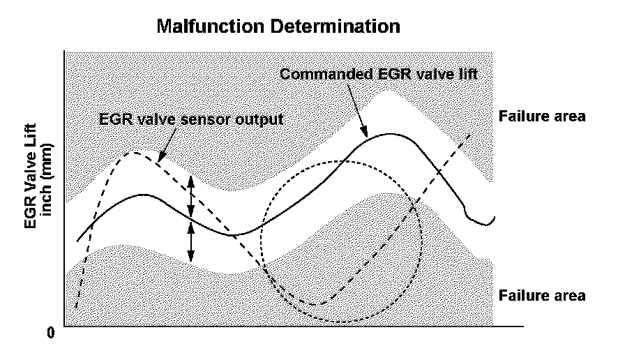
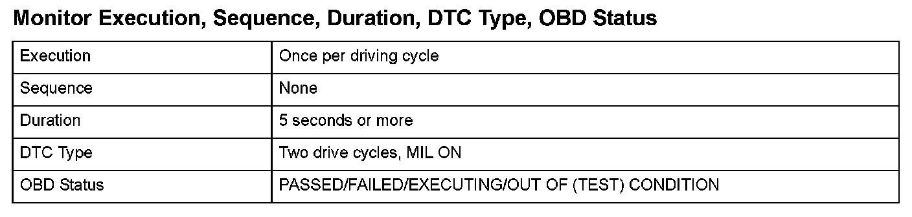

Advanced Diagnostics
DTC P0404: Exhaust Gas Recirculation (EGR) Control Circuit Range/Performance Problem
General Description
The exhaust gas recirculation (EGR) valve, which is controlled by the powertrain control module (PCM), is opened and the exhaust gas flows from the exhaust manifold through the EGR valve and the intake manifold and the EGR passage. The exhaust gas is circulated into the air/fuel mixture and the mixture is drawn into the combustion chamber to lower combustion temperatures, thus reducing oxides of nitrogen (NOx) emissions.
A sensor (lift sensor) is built into the EGR valve and detects the amount of valve lift. The command value for the target valve lift is stored in the PCM so that exhaust gas recirculation can be optimized according to driving conditions.
Comparing this command value with the lift sensor output signal value, the PCM controls the EGR valve to make the amount of actual valve lift equal to the command value.
If the lift sensor output (actual valve lift) is greater than the commanded valve lift, an abnormality in the EGR valve or the lift sensor output is determined.

Monitor Execution, Sequence, Duration, DTC Type, OBD Status

Enable Conditions
Malfunction Threshold
The difference between the command value of the amount of EGR valve lift in the PCM and the actual amount of valve lift is 0.041 in. (1.020 mm) or more for at least 5 seconds.
Confirmation Procedure with the HDS
Do the EGR TEST in the INSPECTION MENU with the HDS.
Driving Pattern
1. Start the engine. Hold the engine speed at 3,000 rpm without load (in Park or neutral) until the radiator fan comes on.
2. Drive the vehicle at a speed between 15 - 75 mph (24 - 120 km/h) for at least 5 seconds.
- Drive the vehicle in this manner only if the traffic regulations and ambient conditions allow.
Diagnosis Details
Conditions for illuminating the MIL
When a malfunction is detected during the first drive cycle, a Temporary DTC is stored in the PCM memory. If the malfunction recurs during the next (second) drive cycle, the MIL comes on and the DTC and the freeze frame data are stored.
Conditions for clearing the MIL
The MIL will be cleared if the malfunction does not recur during three consecutive trips in which the diagnostic runs.
The MIL, the DTC, the Temporary DTC, and the freeze frame data can be cleared by using the scan tool Clear command or by disconnecting the battery.